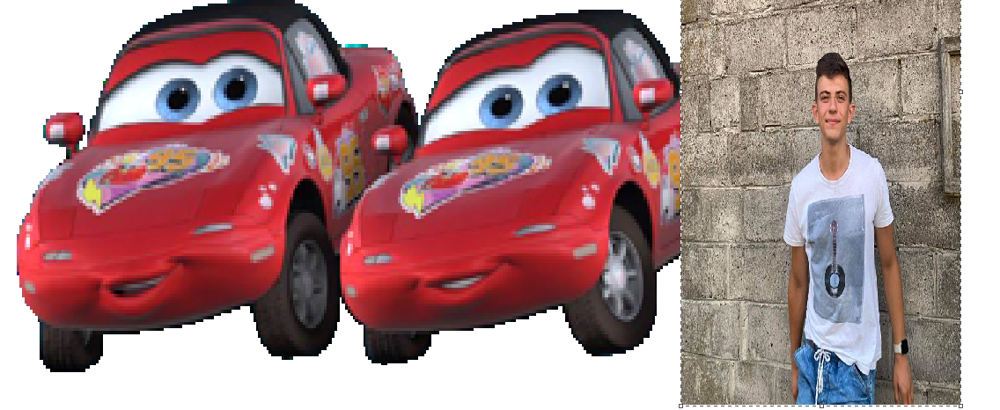
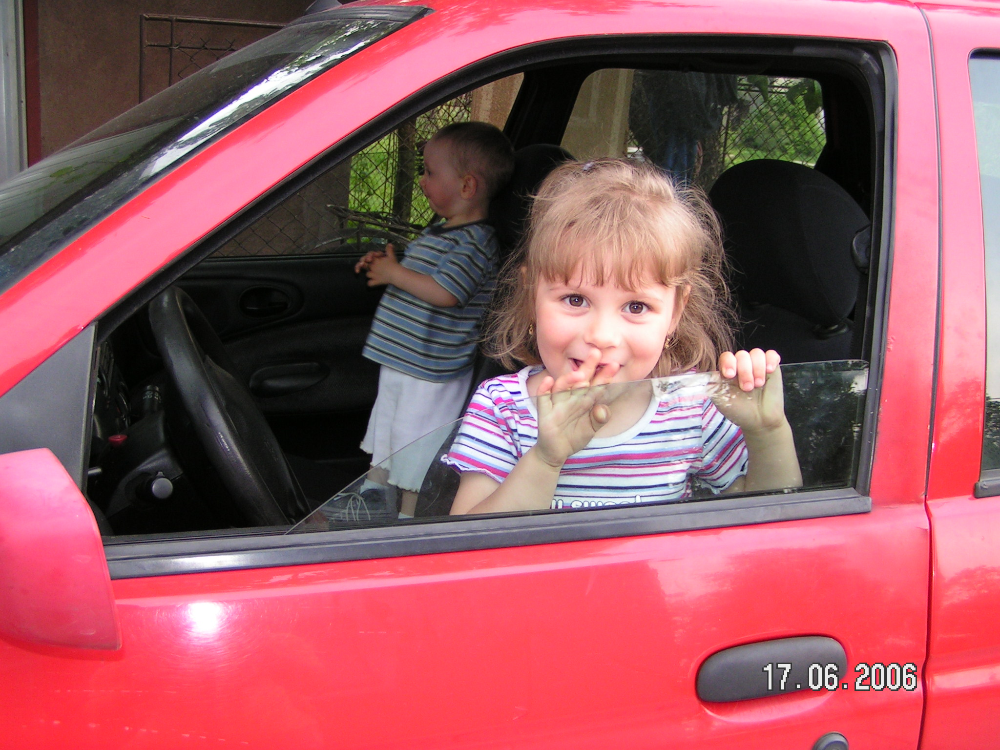
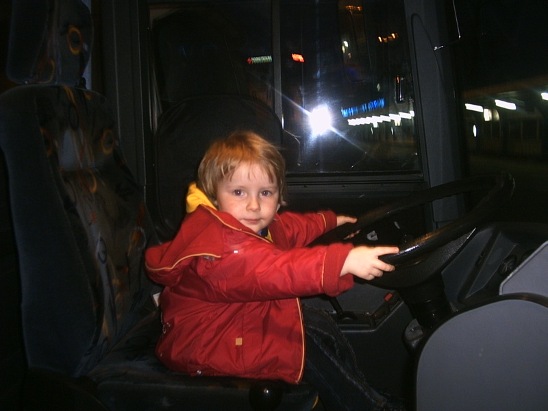
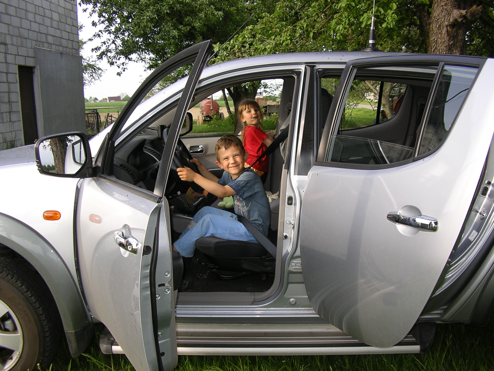

Auta
☰ Kliknij tutajO Autorach

Amelia Lis
Malwina Kochman
Wiktor Krupa
Jesteśmy studentami pierwszego roku na Uniwersytecie ekonomicznym
w Krakowie. Wszyscy wybralimy kierunek Informatyka Stosowana, ponieważ
chcemy rozwijać nasze umiejętności związane z tą dziedziną.
Od wielu lat
jesteśmy fanatykami motoryzacji, także nad wyborem tematyki naszego projektu
nie musieliśmy się długo zastanawiać.



O projekcie
Nasza strona internetowa opiera się na losowym generowaniu różnych informacji na temat samochodów i ich odpowiednich właściwości. Dzięki tej możliwości, stworzyliśmy bazę danych, która pozwoliła nam na opracowanie wykresów. Diagramy te wykorzystują REST API, czyli Representational State Transfer API (Application Programming Interface). Za pomocą funkcji HTTP, mogliśmy uzyskać dostęp do serwera Mockaroo z najpotrzebniejszymi dla nas informacjami.